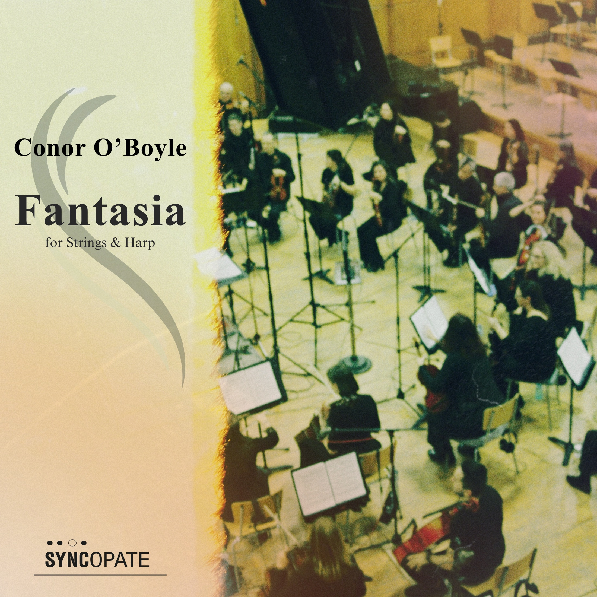
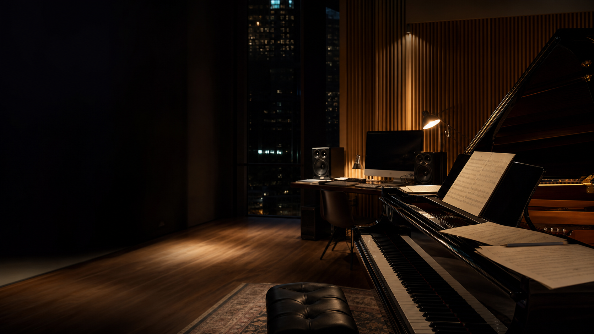
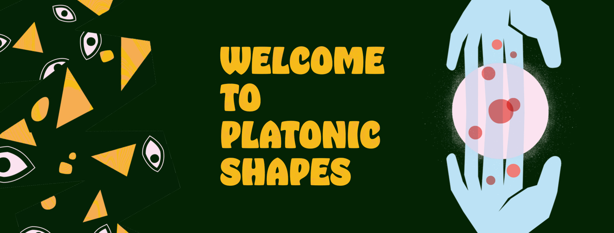
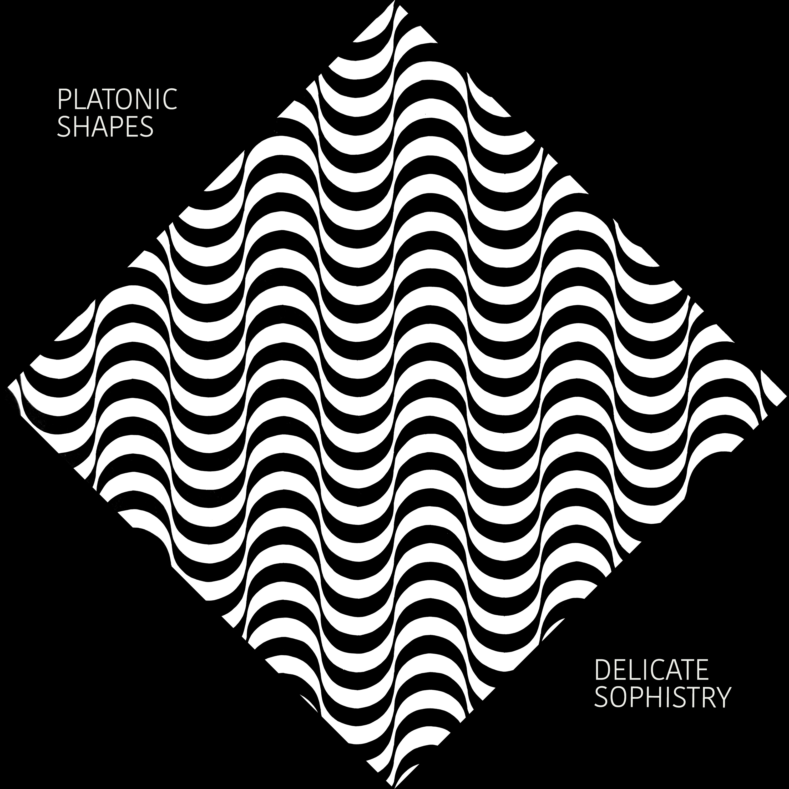

Fantasia For Strings & Harp
Performed by the European Recording Orchestra. A lyrical concert work shaped around string colour, harp resonance, and a broad cinematic sense of line.

Composer / Producer / Orchestrator
"Imaginative and engaging."
Conrad Pope
"A true talent of modern composition in Northern Ireland."
Rory Friers
"Ready to take over Hollywood."
Christopher Young




Performed by the European Recording Orchestra. A lyrical concert work shaped around string colour, harp resonance, and a broad cinematic sense of line.
Credits include Murder In The Badlands, HYFIN, After The Bomb, Stand Up, Playing Peter, The Dodger, Bru, and Colmcille: An Naomh Dana.
An artist project bringing together song-led production, colourful release artwork, and a more direct pop-facing sound alongside Conor's screen and concert work.
Conor O'Boyle is an Irish composer, producer, and orchestrator from Derry whose work spans film, television, concert music, and contemporary classical writing.
Rooted in the expressive traditions of Romanticism while embracing contemporary harmony, colour, and form, his work is characterised by lyrical melody, rich harmonic language, and a strong sensitivity to texture.
Based in Donegal / Derry. Works worldwide.